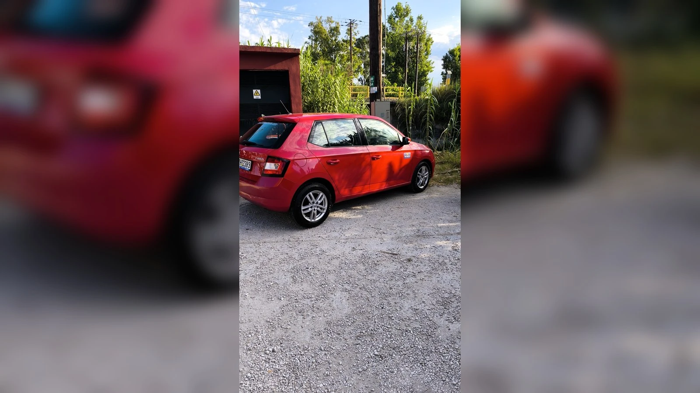
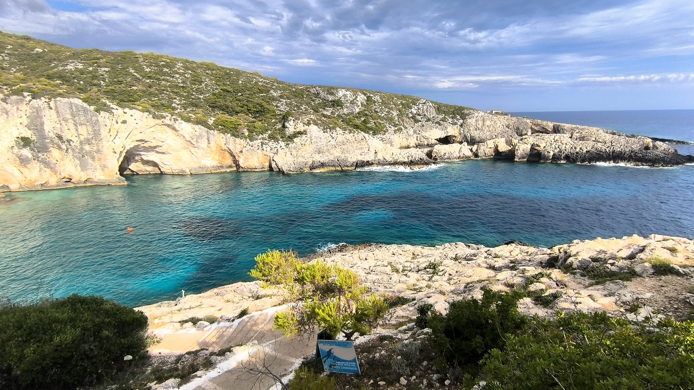
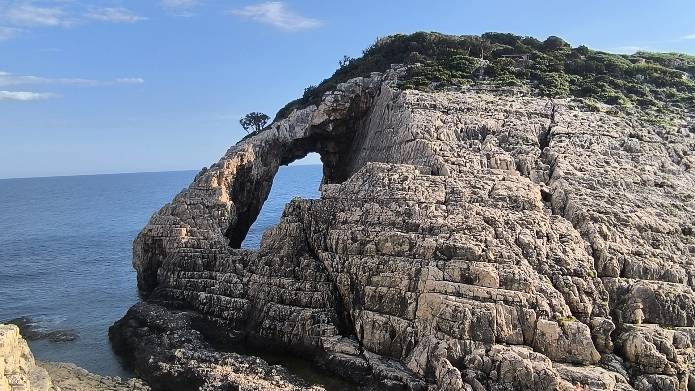
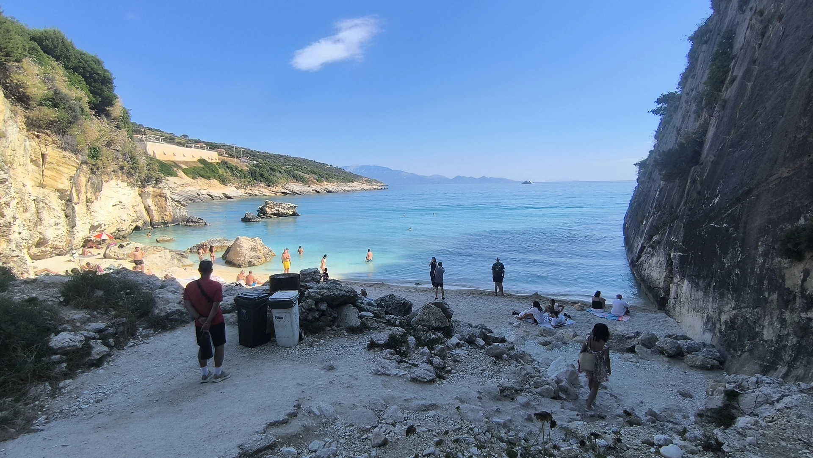
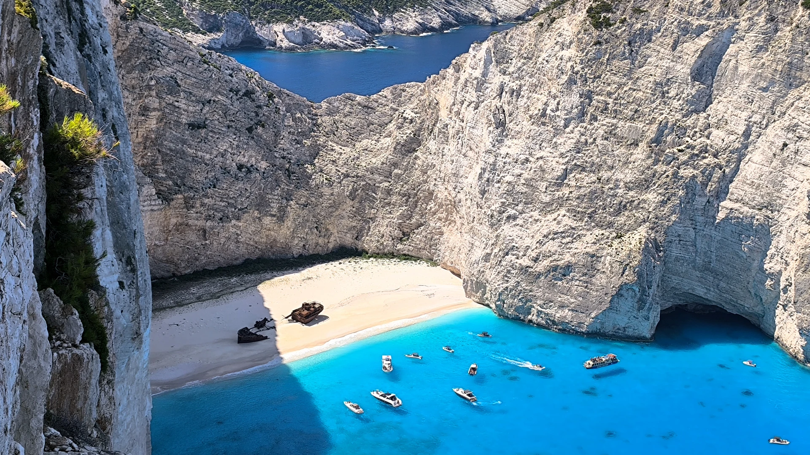
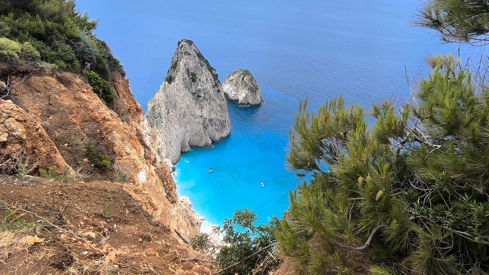
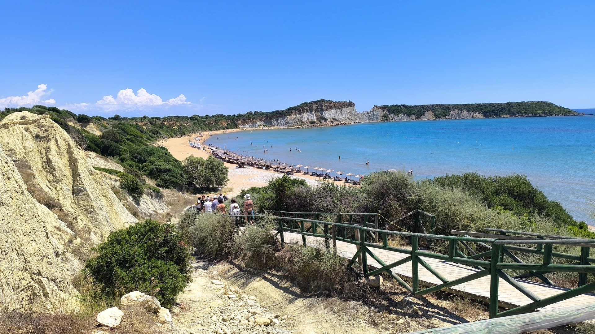
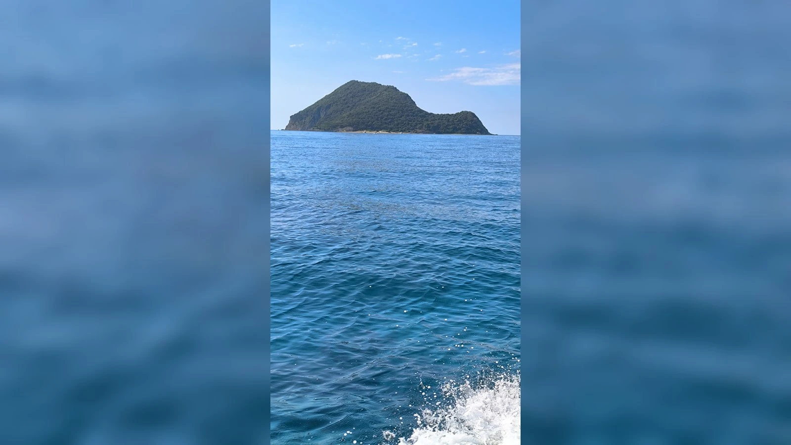

Prečo sa Zakynthos oplatí objavovať autom

Na Zakynthose sme mali požičané auto na 4 dni a spätne to hodnotím ako jedno z najlepších rozhodnutí celej dovolenky. Ak by sme ostali iba v rezorte a na najbližšej pláži, ostrov by sme určite nepochopili tak dobre.
Auto som rezervoval dopredu online, ešte približne vo februári, cez požičovňu Top Rentals | Rent a Car Zante. Mali sme Škodu Fabia, druhého šoféra, detský podsedák a plné poistenie. Na 4 dni nás to vyšlo približne 167 €. Cena bola podľa mňa veľmi dobrá aj preto, že auto bolo rezervované s predstihom.
Veľmi praktické bolo aj odovzdanie auta. Požičovňa nám ho priniesla priamo k hotelu v dohodnutom čase. Presne tak, ako sme boli dohodnutí. Pri vrátení to bolo ešte jednoduchšie – stačilo nechať kľúče na recepcii hotela a nahlásiť číslo izby. Žiadne zbytočné presuny, žiadne čakanie, žiadne komplikácie.
Podľa oficiálneho webu Top Rentals ponúka požičanie áut na Zakynthose s vyzdvihnutím pri letisku aj v oblasti Laganas. Uvádza tiež pobočky pri Airport Main Road a Laganas Main Road, čo je praktické najmä pre ľudí, ktorí bývajú v Laganase alebo chcú auto riešiť hneď po prílete.
Na Zakynthose sú cesty miestami užšie, hlavne smerom k vyhliadkam, zátokám a západnému pobrežiu. Malé auto je preto podľa mňa úplne ideálne. Nie je potrebné nič veľké ani luxusné. Dôležitejšie je mať dobré poistenie, pokoj v hlave a šoféra, ktorý sa nebojí úzkych ciest.
Laganas ako základňa: výborný pre deti, večer živý pre mladých
Bývali sme v Laganase. Je to známe dovolenkové stredisko na juhu ostrova a ako základňa bolo veľmi praktické. Blízko je pláž, prístav na výlety loďou, reštaurácie, obchody aj večerný život.
Pláž v Laganase je dlhá, piesková a má veľmi pozvoľný vstup do mora. Pri vstupe z brehu sa môže zdať, že sú tam kamienky, ale v skutočnosti sú to skôr mušle. Stačí prejsť pár metrov a pod nohami je už jemný piesok. Topánky do vody sme tu nepotrebovali.
Pre rodiny s deťmi je Laganas veľmi dobrý práve preto, že voda je dlho plytká. Človek môže ísť od brehu naozaj ďaleko a stále stojí vo vode. Pre malé deti je to veľká výhoda. More je pokojné, piesok jemný a pláž je dostupná priamo z dovolenkovej zóny.
Ležadlá na verejnej časti pláže boli platené. Presnú cenu si treba overiť podľa sezóny a konkrétneho úseku, ale orientačne to bolo okolo 15 až 20 € za deň.
Večer sa Laganas mení na úplne iné miesto. Je to najživšia časť Zakynthosu, plná barov, hudby, reštaurácií, podnikov a mladých ľudí. Kto chce pokoj, mal by si dobre pozrieť, kde presne má ubytovanie. Kto chce večer vyjsť medzi ľudí, Laganas je na to veľmi dobrý.
Pre nás bol Laganas dobrý kompromis. Cez deň pláž a výlety, večer možnosť prejsť sa, niečo zjesť, pozrieť ruch mestečka a pritom mať všetko po ruke.
Cameo Island: krátky fotogenický výlet pri Laganase
Jeden z prvých výletov autom bol na Cameo Island. Z Laganasu je to len krátka cesta autom smerom k prístavu Agios Sostis. Odtiaľ vedie na ostrovček známa drevená lávka.
Tá lávka je sama o sebe atrakcia. Ľudia sa na nej stále fotia, takže niekedy je ťažké normálne prejsť alebo si urobiť peknú fotku bez davu. Ale keď je človek trpezlivý, dá sa to.
Na konci lávky sa platí vstupné. My sme platili 5 € na osobu. V cene bola aj malá kľúčenka s fotkou, ktorú vám tam urobia. Je to milý detail a pekná spomienka.
Samotný ostrovček je malý, ale veľmi pekný. Visia tam typické biele plachty, voda je čistá a miesto je fotogenické. Dá sa tam aj šnorchlovať. Nie je to výlet na celý deň, ale na hodinu alebo dve je to veľmi príjemná zastávka.
Cameo Island je známy aj tým, že sa tam robia svadby. Ak je tam súkromná akcia, prístup môže byť obmedzený alebo uzavretý. Preto je dobré počítať s tým, že nie vždy musí byť všetko otvorené presne tak, ako si človek naplánuje.
Porto Limnionas: zátoka pre tých, ktorí chcú šnorchlovať

Jedno z miest, ktoré sa nám veľmi páčilo, bolo Porto Limnionas. Nie je to klasická piesková pláž. Skôr je to skalnatá zátoka na západnom pobreží ostrova, kde sa chodí hlavne kvôli čistej vode, jaskyniam, skalám a šnorchlovaniu.
Porto Limnionas má úplne inú atmosféru ako Laganas alebo Banana Beach. Nie je to miesto, kde si človek rozloží uterák na jemnom piesku a celý deň sa hrá s deťmi pri brehu. Je to skôr miesto pre tých, ktorí radi plávajú, šnorchlujú a majú radi prírodné skalnaté zátoky.
Sú tam aj platené ležadlá v privátnej zóne, ale dá sa nájsť aj miesto zdarma. Voda je čistá, prostredie veľmi pekné a pri dobrom svetle to môže byť krásne miesto aj na západ slnka.
Ak by som mal Porto Limnionas zaradiť do itinerára, odporučil by som ho skôr dospelým, párom alebo rodinám so staršími deťmi, ktoré už vedia dobre plávať. Pre malé deti je vhodnejší Laganas, Dafni alebo iné plytšie pieskové pláže.
Rock Arch pri Korakonissi: miesto na fotky a krátku zastávku

Po Porto Limnionas sme boli ešte pri mieste známom ako Rock Arch pri Korakonissi. Je to skalnaté miesto s prírodným oblúkom, ktoré pôsobí trochu drsnejšie a divokejšie než klasické pláže na juhu ostrova.
Toto nie je miesto, kam by som išiel na celodenné kúpanie. Je to skôr krátka zastávka na výhľad, fotky a obdivovanie prírody. More, skaly a prírodný oblúk tam vytvárajú veľmi peknú scenériu.
Takéto miesta robia Zakynthos zaujímavým – nejde len o hotelové pláže a ležadlá, ale aj o prírodné útvary, skaly, zátoky a pohľady na more. Pri Korakonissi však treba byť opatrný. Povrch môže byť nerovný, nie všade sú zábradlia a v horúčave človek ľahko stratí pozornosť. Fotky sú pekné, ale bezpečnosť musí byť vždy prvá.
Xigia Beach: sírna „kolagénová“ pláž medzi útesmi

V deň, keď sme išli na Navagio z útesov, sme sa po raňajkách zastavili na Xigia Beach. Je to menšia pláž medzi útesmi, známa svojou sírnou vodou a špecifickou vôňou, ktorú si človek všimne hneď po príchode.
Xigia sa často prezentuje ako prírodná sírna alebo „kolagénová“ pláž. Práve to jej dodáva zvláštnu atmosféru. Nie je to úplne bežné kúpanie ako na klasickej pieskovej pláži. Skôr je to zaujímavý prírodný zážitok – útesy, čistá voda, sírna vôňa a pocit, že ste na mieste, ktoré je trochu iné než ostatné pláže na ostrove.
Osobne by som Xigiu nebral ako zázračné kúpele, ale ako peknú a netradičnú zastávku po ceste. Veľa turistov sem chodí práve preto, že voda má mať vďaka síre a minerálom priaznivý účinok na pokožku. Každý to môže vnímať inak, ale ako cestovateľský zážitok to určite stojí za krátku návštevu.
Miesto je veľmi pekné, voda má zaujímavú farbu a pláž pôsobí komornejšie než veľké známe pláže. Ak má niekto citlivú pokožku alebo mu prekáža sírny pach, stačí to brať ako krátku zastávku na kúpanie a fotky. My sme ju zaradili po raňajkách cestou na sever ostrova a do programu zapadla veľmi dobre.
Navagio z útesov: nádherný výhľad, ale veľký rešpekt

Navagio je asi najznámejšie miesto na Zakynthose. Pláž s vrakom lode pod vysokými útesmi pozná takmer každý z fotiek. Dôležité však je, že v roku 2026 je vstup priamo na pláž Navagio z bezpečnostných dôvodov zakázaný. Aktuálne správy uvádzajú, že zákaz sa týka vstupu na pláž, plávania pri nej aj priblíženia loďou do vyznačenej zóny, najmä kvôli riziku zosuvov a padajúcich skál.
My sme išli autom hore na vyhliadku. Parkovisko bolo zadarmo, ale cesta je úzka a okolo obeda už prichádza veľa ľudí. Ak chcete dobré svetlo na fotky, čas tesne pred obedom alebo okolo obeda môže byť vhodný. Lenže práve vtedy je tam aj najviac turistov, áut, horúčava a problém s parkovaním.
Na vyhliadke je chodník a zábradlie. To zábradlie tam však nie je náhodou. Ľudia často prechádzajú zaň, aby mali lepšiu fotku. Niektorí idú ešte ďalej po útese, až takmer na koniec. Áno, odtiaľ môžu byť zábery krajšie. Ale riziko je reálne.
Na mieste sú aj pomníky ľudí, ktorí z útesov spadli a zomreli. To je veľmi silná pripomienka, že pri Navagiu treba mať rešpekt. Stačí chvíľa nepozornosti, vietor, závrat alebo zlý krok.
Navagio zhora určite odporúčam vidieť, ale s veľkou opatrnosťou. S deťmi by som bol dvojnásobne opatrný. Fotka nestojí za život.
Myzithres: jeden z najkrajších výhľadov na ostrove

Myzithres bol jeden z najkrajších výhľadov, ktoré sme na Zakynthose videli. Pri reštaurácii s výhľadom je veľké parkovisko zdarma. Už odtiaľ sa dajú urobiť veľmi pekné fotky z diaľky.
Hneď vedľa je aj menšia vyhliadka pri bufete, kde vás pustia vtedy, keď si niečo objednáte. Ale najkrajší výhľad je podľa mňa až po krátkej pešej ceste. Ide sa asi 10 až 15 minút po poľnej alebo lesnej ceste priamo nad skaly v mori.
Odtiaľ sú výhľady naozaj nádherné. Tyrkysové more, skaly, útesy a otvorený priestor. Pre fotky je to výborné miesto.
Ale opäť – nie je tam zábradlie. Treba dávať veľký pozor, hlavne pri deťoch. Pre malé deti to možno ani nie je veľký zážitok. Tie si viac užijú bazén, piesok, more a zmrzlinu. Myzithres je skôr pre dospelých, ktorí chcú výhľady, fotky a prírodu.
Deň pláží: Dafni, Banana Beach, Gerakas a Kalamaki

Jeden deň sme si urobili plážový okruh. Najprv sme išli na Dafni Beach. Je to veľmi pekná pláž v chránenej oblasti. Pri brehu je viac kamenistá, ale v mori je jemný piesok a čistá voda. Miesto je vhodné aj na šnorchlovanie.
Dafni sa nám veľmi páčila aj atmosférou. Obsluha bola príjemná, prostredie pekné a voda vhodná aj pre deti. Pláž je pokojnejšia než Banana Beach a má prírodnejší charakter.
Potom sme išli na Banana Beach. To je už úplne iný štýl. Väčšia, známejšia, živšia a viac turistická pláž. Veľa mladých ľudí, hudba, bary, reštaurácie a plážová obsluha. My sme sa tam aj najedli a obed bol chutný. Ceny boli podľa nás úplne v pohode.
Ležadlá boli rozdelené podľa polohy. V prednej časti boli drahšie, orientačne okolo 40 € za set na deň, v ďalších radoch približne 20 €. Presné ceny sa môžu meniť podľa sezóny, preto to treba brať ako našu skúsenosť z júna 2026.
Z Banana Beach sme chceli pokračovať na Gerakas Beach. Tam bolo veľké parkovisko zdarma a prostredie vyzeralo veľmi pekne. Lenže už v júni bola pláž plná, všetky ležadlá obsadené a bolo veľmi horúco. Bez tieňa a bez ležadla by sme tam dlho nevydržali, takže sme sa len pozreli a vrátili sa späť na Banana Beach.
Cestou späť sme sa ešte zastavili pri Kalamaki, pri konci letiskovej dráhy. Pre niekoho je to malá atrakcia – lietadlá pristávajú a odlietajú veľmi nízko a dá sa ísť až k plotu. Aj z pláže v Laganase bolo pekne vidieť pristávajúce lietadlá, takže kto má rád lietadlá, na Zakynthose si príde na svoje.
Korytnačky Caretta caretta a chránené pláže
Južná časť Zakynthosu je veľmi dôležitá pre morské korytnačky Caretta caretta. Laganas Bay a pláže ako Marathonisi, východný Laganas, Kalamaki, Sekania, Dafni a Gerakas patria medzi známe hniezdne oblasti. ARCHELON uvádza, že v Laganaskej zátoke je šesť hniezdnych pláží s celkovou dĺžkou približne 5,5 km.
Pre turistu to znamená, že niektoré pláže majú pravidlá. Nie všade sa môže chodiť po celej pláži, nie všade si môžete dať vlastný slnečník a nie všade je vhodné pohybovať sa mimo vyznačených častí. Tieto pravidlá nie sú na obmedzovanie turistov, ale na ochranu hniezd a mláďat korytnačiek.
Ak idete na takéto pláže, treba rešpektovať tabuľky, pokyny a vyznačené zóny. Korytnačky sú veľkou súčasťou identity Zakynthosu a práve preto je dôležité správať sa tam citlivo.
Plavba loďou z Laganasu: korytnačky, jaskyne a Marathonisi

Jeden deň sme absolvovali približne 3,5-hodinovú plavbu loďou z prístavu v Laganase. Najprv sme sa pohybovali v Laganaskej zátoke a hľadali korytnačky.
Úprimne – miestami som mal pocit, akoby tam mali jednu „vycvičenú“ korytnačku, ktorú si fotí každá loď, ktorá vypláva z prístavu. Ale aj tak je to zaujímavý zážitok, hlavne ak človek vidí korytnačku vo voľnej prírode prvýkrát.
Potom sme sa plavili smerom k západnému pobrežiu. Boli tam krásne skalné útvary, jaskyne a možnosť zaplávať si v mori. Čakal som, že pôjdeme až k Myzithres, lebo to už nebolo ďaleko, ale úplne tam sme nešli. Aj tak však bola plavba pekná.
Neskôr sme sa vrátili späť do Laganaskej zátoky, obišli Cameo Island a išli na Marathonisi. Tento ostrov je známy tým, že z viacerých strán pripomína korytnačku. Je to symbolické, pretože leží práve v oblasti, kde sa korytnačky vyskytujú a hniezdia.
Na Marathonisi sme mali približne 40 minút. Prostredie bolo veľmi pekné, voda čistá a šnorchlovanie príjemné. Je to dobrá zastávka počas lodného výletu, nie miesto na celý deň. Ale ako súčasť plavby určite dáva zmysel.
Štvorkolka ako dobrodružnejší spôsob objavovania ostrova
Dvaja z nás si požičali štvorkolku na celý deň. Nerezervovali ju dopredu, riešili to až na mieste. Stálo ich to približne 55 € za deň plus benzín.
Za jeden deň stihli prejsť veľkú časť ostrova, dokonca až na sever. Pre nich to bol super zážitok aj preto, že štvorkolku šoférovali prvýkrát.
Štvorkolka môže byť na Zakynthose zaujímavá alternatíva, hlavne pre tých, ktorí chcú trochu dobrodružstva. Treba však jazdiť opatrne. Cesty sú miestami úzke, v zákrutách treba dávať pozor a v horúčave človek ľahko stratí koncentráciu. Prilba a rozumná jazda sú základ.
Prečo na Zakynthose nie je veľa historických pamiatok
Zakynthos nie je ostrov, kam by som išiel primárne za históriou a pamiatkami. Hlavné mesto Zakynthos sme ani nenavštívili, pretože nás viac lákalo more, pláže, výhľady a príroda.
Dôležitý dôvod, prečo na ostrove nenájdete toľko starých historických stavieb ako inde v Grécku, je silné zemetrasenie z roku 1953. Podľa Visit Greece po zemetrasení a následnom požiari zhorelo viacero historických budov a kostolov, pričom mesto bolo následne znovu vybudované s prísnejšími protizemetrasnými pravidlami.
To však neznamená, že Zakynthos nemá atmosféru. Len je iná. Nie je to ostrov antických ruín a veľkých historických areálov. Je to ostrov mora, útesov, výhľadov, korytnačiek, živých letovísk a prírodných miest.
Ak niekoho láka hlavné mesto, môže sa ísť pozrieť na promenádu, námestia alebo kostol svätého Dionýza. My sme sa však rozhodli venovať čas radšej prírode a ostrovu mimo mesta.
Čo sa nám na Zakynthose páčilo najviac
Najviac sa nám páčila pestrosť. Každý deň bol iný.
Laganas bol praktický a výborný pre deti. Cameo Island bol fotogenický krátky výlet. Porto Limnionas ukázal skalnatú a šnorchlovaciu stránku ostrova. Rock Arch pri Korakonissi bol peknou prírodnou zastávkou. Xigia bola netradičná sírna pláž. Navagio z útesov bolo silné, ale aj varovné miesto. Myzithres ponúkol jeden z najkrajších výhľadov. Dafni bola pokojná a príjemná. Banana Beach bola živá a dovolenková. Gerakas vyzeral krásne, aj keď sme tam pre plnosť a horúčavu nezostali. Plavba loďou pridala korytnačky, jaskyne a Marathonisi.
Práve toto robí Zakynthos podľa mňa veľmi dobrým dovolenkovým ostrovom. Nie je nudný. Dá sa na ňom oddychovať, ale aj objavovať.
Pre koho je Zakynthos dobrý tip
Zakynthos by som odporučil hlavne tým, ktorí nechcú byť celý týždeň len v hoteli. Ak si požičiate auto aspoň na pár dní, ostrov sa vám otvorí úplne inak.
Pre rodiny s deťmi je veľmi dobrý Laganas alebo iné plytšie pláže. Pre mladých je zaujímavý večerný Laganas a Banana Beach. Pre páry a cestovateľov, ktorí radi fotia, sú výborné miesta ako Myzithres, Navagio z útesov, Cameo Island, Porto Limnionas alebo Rock Arch pri Korakonissi. Pre tých, ktorí radi šnorchlujú, sa oplatí pozrieť skalnaté zátoky a lodné výlety.
Ak máte malé deti, treba výlety na útesy plánovať rozumne. Nie všetky výhľady sú pre deti zaujímavé a nie všetky sú bezpečné. Deti si často viac užijú bazén, piesok, plytké more a jednoduchý program.
Praktické rady z našej skúsenosti
Auto sa oplatí rezervovať dopredu. My sme ho riešili niekoľko mesiacov pred dovolenkou a cena bola veľmi dobrá.
Na známe miesta treba vyrážať skôr. Parkoviská sa plnia, cesty sú úzke a okolo obeda je horúco.
Na útesoch treba myslieť hlavne na bezpečnosť. Navagio aj Myzithres sú krásne, ale fotka nestojí za riziko.
Na chránených plážach treba rešpektovať pravidlá. Zakynthos je dôležitým miestom pre korytnačky Caretta caretta.
Pri plážach treba rátať s platenými ležadlami. Ceny sa líšia podľa miesta, sezóny a polohy ležadla.
Ak chcete pokoj, dobre si vyberte ubytovanie v Laganase. Centrum večer žije a môže byť hlučné.
Ak máte radi lietadlá, zastavte sa pri Kalamaki pri konci runway. Je to krátka, ale zaujímavá zastávka.
Záver: Zakynthos nás chytil ako celok
Zakynthos nebol pre nás o jednom jedinom najväčšom zážitku. Bol o celkovom dojme. O tom, že ráno môžete byť na sírnej pláži, pred obedom stáť nad Navagiom, poobede šnorchlovať v zátoke a večer sa prejsť živým Laganasom.
Je to ostrov, ktorý sa oplatí vidieť aktívnejšie. Nie iba z hotela, ale aj z auta, z lode, z vyhliadok a z menších zátok.
Ak by som mal dať jednu radu: požičajte si auto aspoň na pár dní a vyrazte objavovať. Zakynthos má veľa miest, ktoré sa nedajú naplno pochopiť z jednej hotelovej pláže. A práve v tom je jeho najväčšie čaro.
Článok vychádza z osobnej skúsenosti z júna 2026. Ceny, vstupy, pravidlá na chránených plážach a bezpečnostné obmedzenia sa môžu meniť, preto si ich pred cestou vždy overte pri aktuálnych zdrojoch, u ubytovania, požičovne, prevádzkovateľa výletu alebo miestnych úradov.